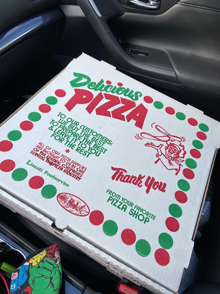
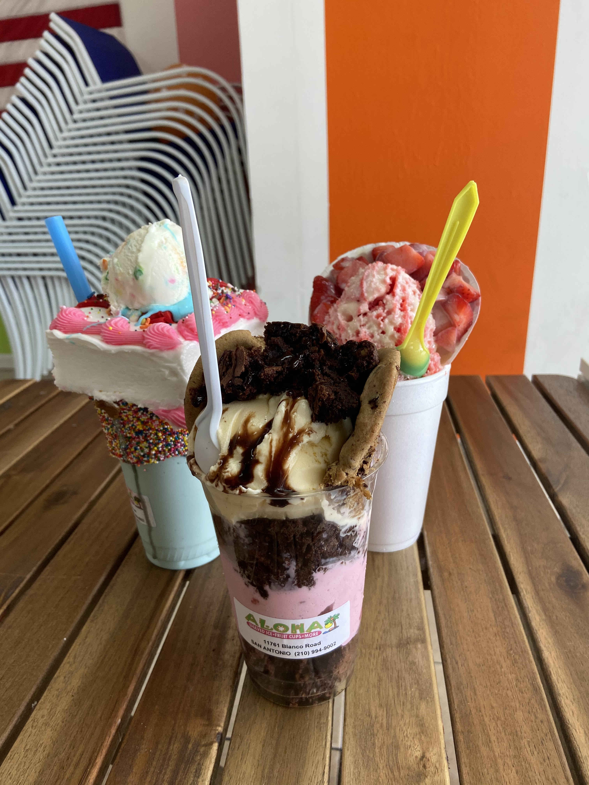

San Antonio Best Food Spots!

The Shack
At The Shack, we're all about bringing your favorite treats to the table every day. After all, when you're out and about, sometimes there's nothing better than taking a break to enjoy some comfort food! We have a variety of dishes, including burgers, hot dogs, frito pie, and corn in a cup (just to name a few). We know folks love dessert as well, so we've also got funnel cake, fruit cups, and sno cones to help you cool off. No matter what you're craving, we hope you'll stop by to see us soon!
Location
7431 Northwest Loop 410 Ste 115
San Antonio, TX 78245
Business Hours
Monday-Sunday: 11:00am - 9:00pm

Florio's PizzaRe
Authentic New York style pizza! I personally wouldn't know how New York pizza is supposed to taste, but this is really a great starting point for those who who are looking for a change in their pizza of choice! They've got a variety of toppings to chose from as well as portion sizes! Not only do they serve pizza, but subs as well!Location
11851 Bandera Rd Ste 121 Helotes, TX 78023
Business Hours
Mon
Closed
Tue
11:30 AM - 3:00 PM
5:00 PM - 9:30 PM
Wed
11:30 AM - 3:00 PM
5:00 PM - 9:30 PM
Thu
11:30 AM - 3:00 PM
5:00 PM - 9:30 PM
Fri
11:30 AM - 3:00 PM
5:00 PM - 9:30 PM
Sat
12:00 PM - 9:30 PM
Sun
Closed

Aloha Shaved Ice
Why Aloha? Aloha is different from the rest! How? Aloha is NOT a Fruitaria, Aloha does not serve you through a window, Aloha does not make you stand in 100 degree weather! What are we? We are a one of a kind Snack Shop that provides indoor seating, the freshest products, and we build personal relationships with our customers. Customer Care is our #1 Priority!
Location
11761 Blanco Rd, San Antonio, Texas 78126
Business Hours
Mon Closed
Tue 12:00 pm – 09:00 pm
Wed 12:00 pm – 09:00 pm
Thu 12:00 pm – 09:00 pm
Fri 12:00 pm – 09:00 pm
Sat 12:00 pm – 09:00 pm
Sun 02:00 pm – 08:00 pm